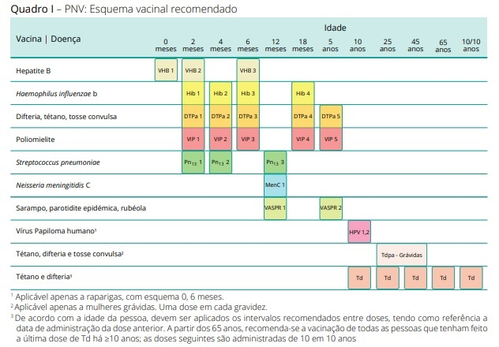

Vacinação
O Programa Nacional de Vacinação (PNV) inclui as vacinas contra a tuberculose, a hepatite B, a difteria, o tétano, a tosse convulsa, a poliomielite (paralisia infantil), a meningite e a septicémia (causadas pela bactéria Haemophilus influenzae tipo b), o sarampo, a parotidite (papeira), a rubéola, as infeções causadas pelo Vírus do Papiloma Humano (HPV) e as infeções por Streptococcus pneumoniae. Estas doenças podem ser graves e até mortais, sendo a vacinação um dos factores de prevenção mais seguros. Para ficar protegido é por vezes necessário receber várias doses e reforços de vacina ao longo da vida. O Calendário de Vacinação atualmente recomendado é o seguinte (fonte: Programa Nacional de Vacinação, Direção Geral de Saúde):

Que outras vacinas, não integradas no PNV, se podem fazer?
Para além das vacinas integradas no PNV, existem outras vacinas que poderá efectuar de acordo com as recomendações do seu médico como por exemplo, as vacinas contra a pneumonia ou contra a gripe sazonal.
Vacinação contra a Gripe sazonal
Embora não esteja incluída no PNV, a vacina contra a gripe sazonal é recomendada às pessoas com mais de 65 anos, às pessoas com doenças crónicas dos pulmões, do coração, dos rins ou do fígado e às pessoas que sofram de diabetes ou de outras doenças que causem diminuição da resistência às infecções. Esta vacina é comparticipada e deve ser administrada no início do Outono. Aconselhe-se com o seu médico de família.
O que é necessário para fazer uma vacina no Centro de Saúde?
Basta dirigir-se ao seu Centro de Saúde. Não é necessário estar inscrito nem ter médico de família. Deve fazer-se acompanhar do “Boletim de Vacinas” (Boletim Individual de Saúde). As vacinas incluídas no Programa Nacional de Vacinação são gratuitas. Siga as recomendações dos Serviços de Saúde, nomeadamente os esquemas de vigilância de saúde materno-infantil e o calendário de vacinação.